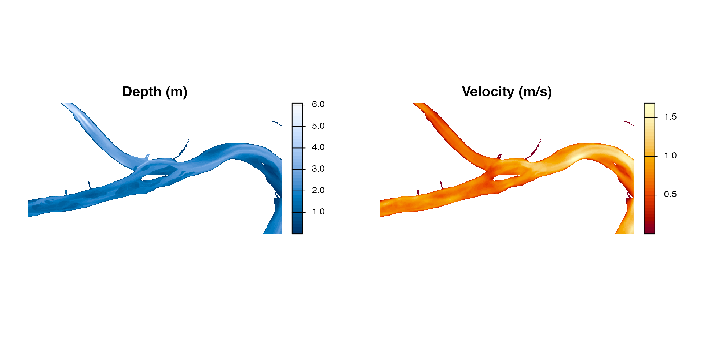
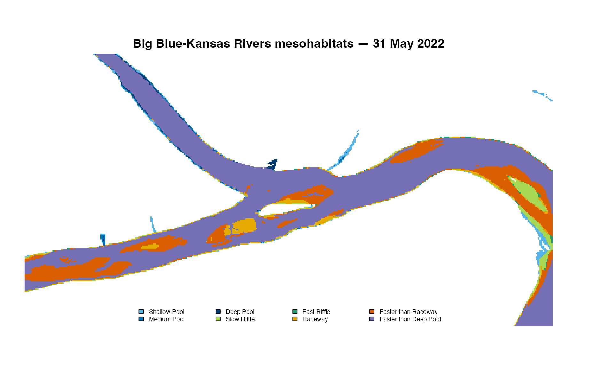
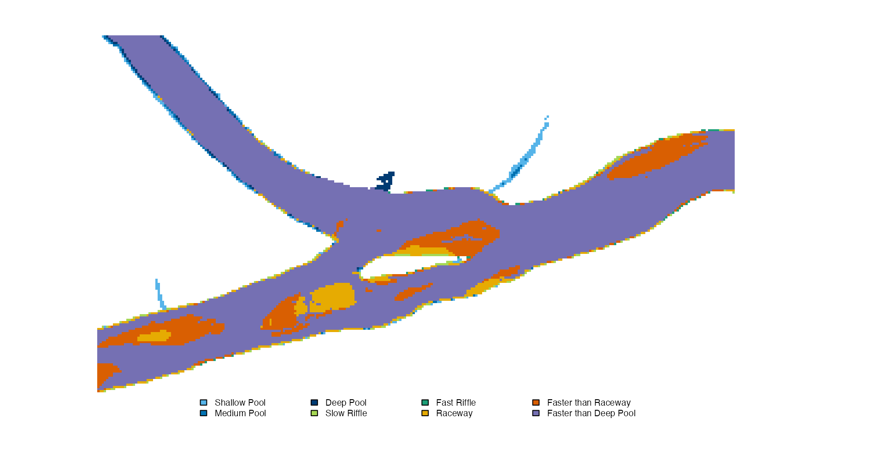

HEC-RAS depth and velocity GeoTIFF workflow
Source:vignettes/hec-ras-example.Rmd
hec-ras-example.RmdHEC-RAS workflows commonly begin with paired depth and velocity GeoTIFFs. The package includes a compact pair derived from the 31 May 2022 HEC-RAS model output used by Cordero and Harris (Preprint). These are real hydraulic surfaces from the confluence of the Big Blue and Kansas Rivers near Manhattan, Kansas, rather than synthetic cells.
The source rasters were cropped to the detailed manuscript-map extent, aggregated from 3-foot to 18-foot cells, and converted from feet and feet per second to metres and metres per second. The raster coordinates remain in the source project’s documented NAD 1983 (CORS96) StatePlane Kansas North system.
Inspect the hydraulic inputs
The helper can return either installed GeoTIFF paths or loaded rasters:
paths <- mesohabitat_example_rasters(paths = TRUE)
basename(unlist(paths))## [1] "big_blue_kansas_depth_m.tif" "big_blue_kansas_velocity_m_s.tif"
h <- mesohabitat_example_rasters()
terra::compareGeom(h$depth, h$velocity)## [1] TRUE
old_par <- graphics::par(mfrow = c(1, 2), mar = c(1, 1, 3, 4))
terra::plot(h$depth, col = grDevices::hcl.colors(40, "Blues 3"),
main = "Depth (m)", axes = FALSE)
terra::plot(h$velocity, col = grDevices::hcl.colors(40, "YlOrRd"),
main = "Velocity (m/s)", axes = FALSE)
Depth and velocity surfaces derived from the 31 May 2022 HEC-RAS output at the Big Blue-Kansas Rivers confluence.
graphics::par(old_par)Inspect units, dry-cell encoding, CRS, extent, resolution, origin, and dimensions before classifying any HEC-RAS export. The example is already in the metric hydraulic units required by the default scheme.
Classify the river
classes <- classify_mesohabitat_raster(h$depth, h$velocity)
class_colors <- mesohabitat_palette()
plot_mesohabitat(
classes,
main = "Big Blue-Kansas Rivers mesohabitats — 31 May 2022",
axes = FALSE,
palette = class_colors
)
Eight-class hydraulic mesohabitats derived from the real HEC-RAS sample.
The white background is outside the HEC-RAS wetted surface. Class IDs describe depth-velocity combinations; they are not habitat-quality scores.
Work with an area of interest
An AOI can be a SpatVector or a supported vector path.
By default both crop and polygon mask are applied. This reproducible
rectangle selects the central part of the included river sample:
e <- terra::ext(h$depth)
dx <- terra::xmax(e) - terra::xmin(e)
dy <- terra::ymax(e) - terra::ymin(e)
aoi <- terra::as.polygons(
terra::ext(
terra::xmin(e) + 0.18 * dx, terra::xmax(e) - 0.18 * dx,
terra::ymin(e) + 0.12 * dy, terra::ymax(e) - 0.12 * dy
),
crs = terra::crs(h$depth)
)
cropped <- classify_mesohabitat_raster(h$depth, h$velocity, aoi = aoi)
plot_mesohabitat(
cropped, axes = FALSE, palette = class_colors
)
Mesohabitat output cropped to a central area of interest.
When input geometry differs, align = "velocity_to_depth"
uses bilinear interpolation to project or resample continuous velocity
to the depth template. Assigning a known missing CRS with
assume_crs describes existing coordinates; it does not move
them.
Process and export scenarios
For multiple dates, use unique matching names rather than relying on file order. Output can be written to a GeoTIFF with an accompanying class-table CSV:
series <- classify_mesohabitat_series(
list(`2022-05-31` = h$depth),
list(`2022-05-31` = h$velocity)
)
out <- file.path(tempdir(), "hecras_mesohabitat.tif")
write_mesohabitat(series[[1]], out, sidecar = TRUE, overwrite = TRUE)Determine how dry HEC-RAS cells are represented before choosing
dry_threshold; the package does not silently redefine zero
depth.